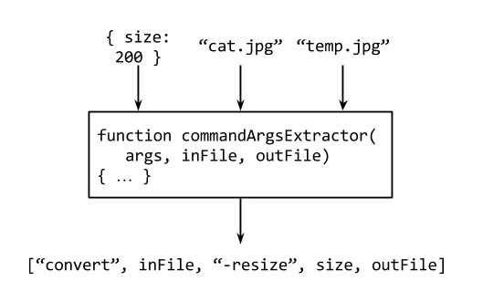

name: inverse layout: true class: center, middle, inverse --- #Quiver.js A New Server-side Component Architecture .footnote[By [Soares Chen](http://github.com/soareschen) (Ruo Fei)] --- layout: false # Introduction to Quiver --- # Architecture Overview .center[  ] - Six layers of constructs - Each construct make use of previous layer constructs - Only stream handler and filter will be presented here --- # Stream Handler .center[  ] - Accept a key-value object `args` - Accept a stream-like object `streamable` - Asynchronously return a stream-like object --- # Example Hello Handler ```javascript var helloHandler = function(args, callback) { callback(null, 'Hello World!') } exports.quiverComponents = [ { name: 'demo hello handler', type: 'simple handler', inputType: 'void', outputType: 'text', handler: helloHandler } ] ``` - Define a component of type Simple Handler - Component name as JS string with spaces - Ignore input stream (void), output text stream - Definition exported through Node's `module.exports` --- # Image Thumbnail Server - Use case - Create a simple server to serve resized image files - Quiver's approach - Reuse existing components - Components have no knowledge of images and thumbnails --- # Static File Server .center[  ] - First step: create a static file server - Make use of `quiver-file-component` library - Run out of the box using `quiver-server` - Wrapper tool to run a handler component as HTTP server ```bash $ quiver-server . --config ./config.js --main \ 'quiver file directory handler' ``` --- # Image Conversion .center[  ] - Perform image conversion by forming a stream pipeline - Define new component called `resize image handler` - Define pipeline as new component called `image thumbnail handler` --- # Command Handler - Resize image handler extends from `file convert command handler` - Make use of `quiver-command-component` - Handler wrapped around ImageMagick's `convert` command ```bash $ convert in.jpg -resize 200 out.jpg ``` - Handler perform implicit conversion 1. Input stream to file 2. Execute Command 3. Output file to stream --- # Command Args Extractor .center[  ] - One more configuration needed for command handler - Command to execute - Order of command line parameters - Supply a `commandArgsExtractor` function to specify the command --- # Image Convert Component ```javascript { name: 'demo resize image handler', type: 'stream handler', configOverride: { commandArgsExtractor: imageResizeCommandArgsExtractor, }, resultContentType: 'image/jpeg', handler: 'quiver file convert command handler' } ``` - New component extends from existing component - Configuration altered through `configOverride` - Extended component now knows how to resize image stream --- # Pipeline Component ```javascript { name: 'demo image thumbnail handler', type: 'stream pipeline', pipeline: [ 'quiver file directory handler', 'demo resize image handler' ] } ``` - Define new component of type Stream Pipeline - Pipeline stages specified as component names ```bash $ quiver-server . --config ./config.js --main \ 'demo image thumbnail handler' ``` - Component can run immediately using `quiver-server` --- # Caching Resize Result .center[  ] - One issue remain for current pipeline - Pipeline is executed repeatedly for each request - Quiver does not provide implicit optimization - Filter is provided instead as a general solution - Extends existing handler and intercept its input/output --- # Cache Filter .center[  ] - Apply cache filter to the entire pipeline - Result from pipeline is cached - Result cached based on `args.path` - Pipeline skipped if cached result available --- # Final Thumbnail Component ```javascript { name: 'demo image thumbnail handler', type: 'stream pipeline', middlewares: [ 'quiver memory cache filter' ], pipeline: [ 'quiver file directory handler', 'demo resize image handler' ] } ``` - Just 3 extra lines of code in component definition - Filter is a subtype of middleware - Default Quiver memory cache filter works out of the box - Filter component available in `quiver-cache-component` --- # One Pattern, Unlimited Combination - File + Image Resize + Memory Cache - S3 + Audio Encode + Disk Cache - Git + Compilation + CDN Cache - Remote API + Template + Permission --- # Preview of All Constructs .center[  ] - True power of Quiver lies in more advanced constructs - Quiver solves many other problems in web development - Dependency management --- # Thank you! Slide available at http://quiverjs.github.io/slides-01 Slideshow created using [remark](http://github.com/gnab/remark).